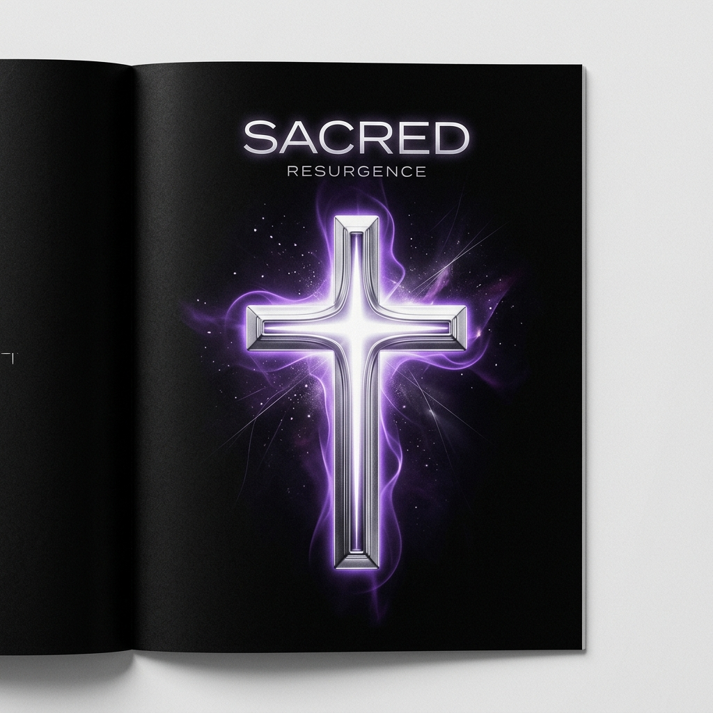

Immaginate un mondo in cui il male invisibile può impossessarsi di voi, stravolgere la vostra mente e trasformarvi in uno strumento di terrore. Da oltre un secolo, il cinema esplora questa paura ancestrale, trasformando antichi rituali religiosi in pura tensione visiva.
Dalle origini storiche all'evoluzione sul grande schermo
Il viaggio interattivo tra teologia cattolica e cronaca documentata: le radici bibliche, i santi e il caso reale del 1949.
La grande timeline dei film: un secolo di possessione e rituali sul grande schermo, dagli albori del muto alle produzioni contemporanee.
I capolavori cinematografici della possessione
Il film che ha sconvolto il mondo, rendendo il male carnale, tangibile e rivoluzionario.
Il processo teologico e penale al confine instabile tra psichiatria moderna e fede.
La figura dell'esorcista alle prese con lo scetticismo razionale in una Roma monumentale.
La nascita del cacciatore laico del male attraverso la strumentazione tecnologica dei Warren.
La metamorfosi del cacciatore del male
Dal monaco medievale degli albori cinematografici al sacerdote tormentato degli anni '70, fino ad arrivare all'investigatore laico moderno e all'eroe d'azione contemporaneo. Scoprite come si è trasformata la figura dell'esorcista nello specchio dei nostri timori culturali e della nostra perenne ricerca di catarsi.
Esplora l'Archetipo